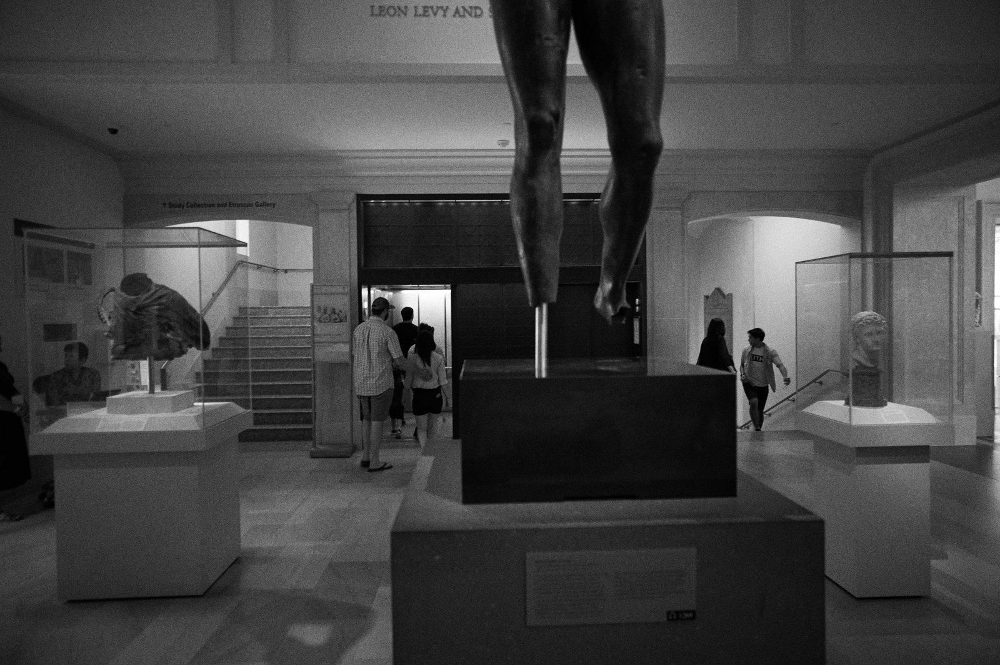

This causes seizures
I almost lost my friend at twenty eight
he went to sleep after a good fuck
and somewhere in his dark sweaty night,
his brain just got shocked.
He’s switched careers twice,
over there and back again
both times, nothing crazy,
just stopped following the plot.
He said he woke up that morning
and the light through the blinds,
it started dancing, moving,
from side to side even through he wasn’t.
He lay back down, light still dancing,
wondering how his new job would take the news,
that he’d be out for a while, his eyes
just stopped following the plot.
First published in Ethel, vol. 6, August 2020